欢迎
欢迎来自 Scala STM 的创造者。我们已经为 scala 构建了一个轻量级的软件事务性内存, 灵感来自于Haskell STMs和Clojure, 同时利用了Scala 的力量和性能。
ScalaSTM 是一个没有依赖关系的单一 JAR, 包括
- 支持多个 STM 实现的 API
- 基于 CCSTM 的参考实现
- 可扩展的并发sets和maps(具有快速快照), 可以在事务内部或外部使用
ScalaSTM 提供一个可变单元称为一个Ref，如果使用不可变对象和 Ref-s构建共享数据结构, 则可以从多个threads或actors访问该结构。没有同步、没有死锁或争用条件以及良好的可伸缩性。包括并发sets和maps, 我们也有一个更容易和更安全的替代wait和notifyAll。
介绍
STM是什么？
STM（软件事务性内存）是介于代码的关键部分 (atomic原子块) 和程序堆之间的中介。STM 在atomic原子块中读取和写入过程中进行干预, 允许它检查and/or避免干扰其他线程。如果多个线程的负载和存储变得交错, 则将回滚该atomic原子块的所有写入, 然后重试整个块。如果关键部分的访问不是交错的, 则它就像是以原子的样子完成的, 并且可以提交原子块。其他threads或actors只能看到已提交的更改。
STMs 使用乐观并发控制。他们乐观地认为, atomic原子块将能够并行运行, 然后备份和重试, 如果推测是不正确的。保留旧版本的数据以便备份可能会带来一些开销, 但乐观并发通常比其他方法具有更好的可伸缩性。
ScalaSTM - 没有魔力
有几个雄心勃勃的尝试来创建 STMs, 可以并行运行现有的顺序命令代码。这是一项难度很大的任务, 需要大量的魔力, 因为对 STM 的调用需要插入到一个atomic原子块内的非final字段或数组元素的每个负载和存储中。良好的性能也很难, 因为大量的读写。
ScalaSTM API 通过只管理 Ref-s, 避免了对魔力的需要。这意味着要管理的内存位置较少, 因此不需要字节码检测或编译器修改。就像在Haskell和Clojure中 一样, Ref 的效用通过语言对不可变数据结构的良好支持被放大。ScalaSTM 还包括可在事务中使用的并发sets和maps。
ScalaSTM是给谁的呢？
ScalaSTM 是程序员用来协调threads或actors对共享数据的访问。在服务器中, 这可能是活动连接或缓存的列表。在客户端中, 这可能是部分结果或工作线程状态。
优点：
- 说出你的意思。你编写atomic原子, ScalaSTM 原子执行它没有deadlocks 或者 races。不需要将锁映射到数据。嵌套的原子块做了正确的事情, 所以你可以从简单的开始构造复杂的线程安全的操作。
- 读取规模。系统中的所有线程都可以在不相互干扰的情况下读取数据。乐观算法比悲观方法更好地利用了现代架构上的缓存。
- 异常自动触发清理。如果atomic原子块引发异常, 则所有 Ref-s 都将重置为其原始状态。(如果愿意, 可以更改此默认值）
- 等待复杂的条件是容易的。如果一个atomic原子块找不到它要查找的状态, 它可以调用重试备份并等待其任何输入更改。如果有多种方式标识成功, 你可以将它们链接起来，ScalaSTM 将尝试他们所有。
- 简单。ScalaSTM 只是一个独立的库, 所以它不会影响应用程序中不使用它的部分。这意味着可以将其包含在框架或隐藏组件中。
缺点： - 每次读或写两个额外字符。如果 x 是 Ref, 则 x () 读取其值, x () = v 写入它的值。
- 单线程开销。在大多数情况下, 当程序实际上没有并行运行时, STMs 的速度会减慢。我们已经得到了实际成本相当低, 所以对于大多数使用者来说这不会是一个问题。即使在单线程程序中，回滚也非常有用，以便在异常情况下自动清除。
- 回滚与I/O混合的不是很好。只会自动撤消对 Ref-s 的更改。ScalaSTM API 提供了hooks , 因此您可以执行手动补偿或数据库集成, 但无法撤回数据包或像素。当然, 当你持有一个锁的时候你可能不应该做I/O。
快速开始
作为一个简单的例子,我们将构建一个可以被多个线程或actor安全使用的双向链表。我们将会教我们的列表如何成为一个阻塞队列,然后我们将添加从多个队列中选择下一个可用元素的能力。
安装
如果你使用sbt，把下面的依赖添加到你的工程中build.sbt文件中，
然后运行sbt update
Maven2的配置可以从如下链接获取：https://nbronson.github.io/scala-stm/releases.html
对共享变量使用Ref
在我们的可变链表中， 我们需要每个节点的下一个和上一个指针是线程安全的。通常， 如果一个线程可能在另一个线程访问它 (读取或写入) 的同时写一个变量，那么STM需要通过Ref来参与。
Ref是单个的可变单元，还有事务性集合(如TMap和Tset)，它们是scala.collection.mutable.集合的替代品.
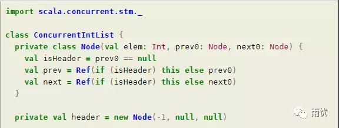
为了让代码更简单，我们通过一个额外的header节点使列表循环，在创建时，这个header节点的next节点和prev节点指向自身，next节点和prev节点总是非空的。
用atomic包装你的代码
如果 x 是 Ref, 则 x () 获取存储在 x 中的值, x () = v 将其设置为值 v。
只能在atomic代码块内读取和写入Ref-s。这在编译时通过要求可用的隐式InTxn 值来进行检查，Atomic代码块是一个需要一个lnTxn参数的函数，因此可以通过将参数标记为隐式的来满足此要求。
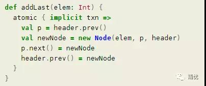
组合atomic操作
Atomic代码块嵌套，因此你可以通过一个简单的开始构建复合操作.
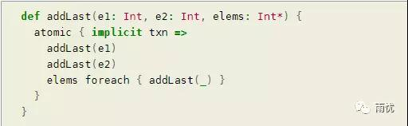
优化单一操作事务
Ref.single返回一个Ref.View类型的实例，这个行为就像原始的Ref只是它也可以在一个atomic代码块之外访问。Ref.View上的每一个方法都类似于单操作事务，因此name.Ref.View提供了多种执行读写的方法，例如swap，compareAndSet和transform。如果一个atomic块只访问一个Ref，那么使用Ref.View可能会更简洁、更高效。
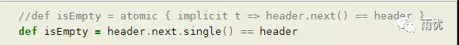
等待条件变化
当一个atomic代码块无法在当前输入状态下完成时使用retry关键字。在atomic代码块内调用retry将导致它回滚，等待它的一个输入更改，然后重试执行。这大致类似于调用wait等待ScalaSTM 自动生成相匹配 notifyAll 的调用。作为其实现乐观并发的一部分，STM跟踪了一个atomic代码块的read集合，Ref-s的集合已在事务期间读取（即在事务过程中读取的 Ref-s 集合），这意味着STM可以有效的阻塞当前线程，直到另一个线程已经写入其read集合中的一个元素，在这段时间内，可以重试该atomic代码块，这使得等待复杂的条件变得微不足道，并可避免丢失唤醒。
为了演示，我们将会添加一个函数到我们的列表，等待直到这个列表是非空的，然后移除并返回第一个元素：
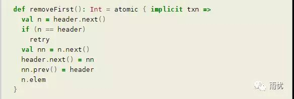
等待多个事件
在atomic代码块结束后重试的另一种方法是提供另一种选择。你可以用 orAtomic去链接atomic代码块;如果上层的调用retry, 则会尝试较低的替代方案。这就允许你组合功能如使用retry阻塞或者从一个阻塞行为中进行转换。
例如，我们可以通过提供一个可选方案并使用阻塞版本的removeFirst 来构造一个返回Option的方法：
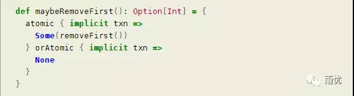
这样也很容易从一个返回故障代码的函数切换到返回一个块的函数，下面的select方法阻塞直到他的输入是非空的，然后从列表中移除并返回第一个元素：
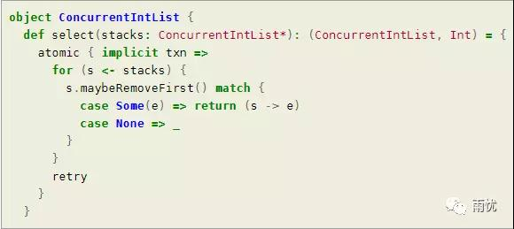
当心回滚
在乐观并发能够成功之前, ScalaSTM 可能需要多次尝试一个atomic代码块，任何对 STM 的调用都可能会发现故障并触发回滚和重试。如果本地非 Ref 变量的生存期长于atomic代码块， 则不会回滚, 因此应该避免它们。不过, 只在atomic代码块的内部或仅在外部使用的局部变量是很好的。
下面，badToString 是不正确的， 因为它在atomic代码块的外部和内部使用可变 StringBuilder。返回值将会明确提到列表中的所有元素, 但它其中的一些内容可能会出现两次或更多次。
toString是正确的, 因为对于每次atomic尝试它都使用一个新的 StringBuilder。
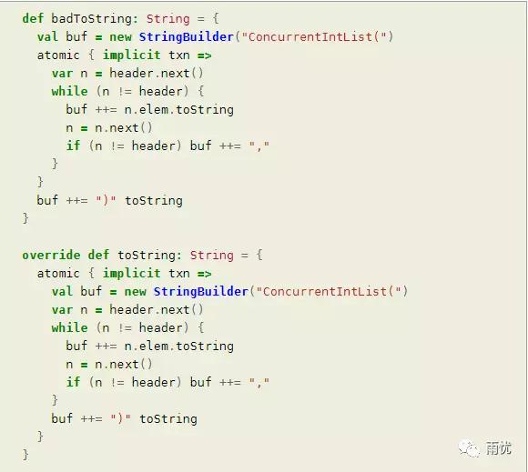
查看源代码
此列表示例是 GitHub 上源代码的一部分: ConcurrentIntList.scala
文章来源：https://nbronson.github.io/scala-stm/quick_start.html
示例源代码：https://github.com/nbronson/scala-stm/blob/master/src/test/scala/scala/concurrent/stm/examples/ConcurrentIntList.scala
真人秀哲学家Demo
Dijkstra 创建了餐厅哲学家的问题, 作为并发系统中的死锁的例子 (维基百科上的用餐哲学家)。每个哲学家必须拿起两个叉子吃他的饭, 但没有足够的叉子, 他们都吃一次。哲学家必须有某种策略, 以确保他们不都拿起一分叉, 然后永远等待一秒钟。
许多解决方案都可能避免死锁, 但 STM 提供了一个特别简单的方法。ScalaSTM 的atomic原子块提供了一种方法, 让哲学家同时拿起两个叉子, 这是大多数实现者不可用的能力。
这表明当结合重试时，Ref [Boolean] 表现的可以像锁一样。
添加一个摄像头
在这个时代, 食客们更有可能不得不在真人秀节目上比在闭门的情况下为叉子而战。与基于信号量或代理的解决方案不同, STM 解决方案可以很容易地添加摄像头的外部透视图。在实际系统中, 外部视图可能来自管理控制台 (读取和写入)、检查点线程或 GUI 组件。
记录所有权
首先, 我们将更改叉子, 以便他们使用一个选项来记录所有者的存在和所有者的名称。请注意, 当使用Ref工厂方法创建 Ref[Option[String]] 时, 我们需要强制 类型为”None” 。如果我们没有这样做, 那么所有者将最终作为一个 Ref [None], 这不是很有用。
我们还将给每个哲学家一个名称和一个 Ref[Int] 来记录他们的进展。为方便起见, Ref和Ref.View为具有关联Numeric[A] 的类型 A 提供就地算术运算 (如+=)。
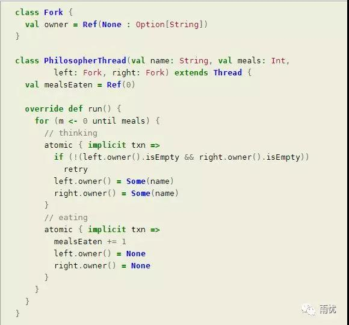
捕获快照
捕捉系统状态的图像现在就像遍历原子块中的叉子和哲学家一样容易。事务不能访问在原子块外声明的可变对象 (或 var), 这一点很重要。下面的可变 StringBuilder 是在原子块内创建的, 所以它是安全的。
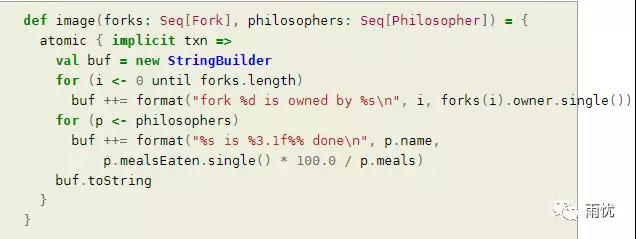
Demo全部源码
此示例的完整源可用作 github 的 ScalaSTM 源的一部分: RealityShowPhilosophers.scala.它包括一个摄像头线程, 它可以一秒钟打印图像60次, 以及处理线程停止。
下面是运行 RealityShowPhilosophers 的摘录。注意, 因为叉子被拾起并且立刻被放下, 摄像头从未观察一个哲学家只拿着一个叉子。
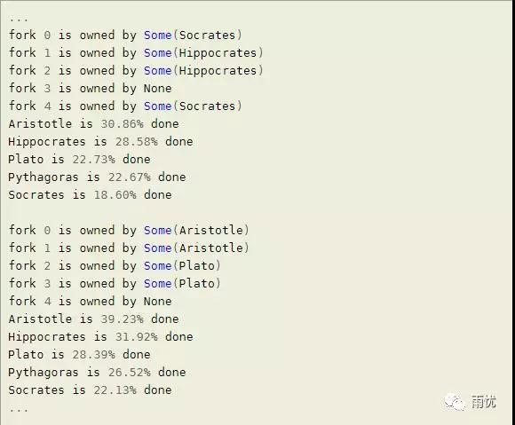
异常
当原子块引发异常时会发生什么情况？STM 社区中存在关于是否应回滚或提交事务的辩论。ScalaSTM 使用一种混合的方法来尝试做正确的事情。
异常 -> 回滚 + 重新抛出
如果atomic原子块引发异常, ScalaSTM 将其回滚, 然后重新抛出该异常。当异常被再次引发时, atomic原子块将被左回滚。对于表示实际错误的异常, 这是一个很好的默认行为, 因为它防止了任何共享数据结构的损坏。
控制流异常 –> 提交 + 重新抛出
有时, 异常表示非本地控制转移, 而不是一个意外的错误。在这种情况下, 应该提交事务。ScalaSTM 测试每个异常转义一个atomic原子块以确定哪个行为是合适的 (查看scaladoc文档TxnExecutor.isControlFlow了解更多)。默认情况下, 扩展 scala.util.control.ControlThrowable 的所有异常都被视为控制流。
异常和嵌套
以前有关异常处理的规则适用于嵌套事务。这意味着在提交外部事务时可能会回滚嵌套事务。例如, 在下面的代码运行后, 最后将保存值 “outer”：
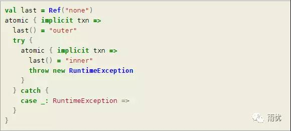
为了使嵌套更廉价, ScalaSTM 尝试将所有嵌套级别拼合成一个顶级事务。如果内部事务引发异常, 则没有足够的信息来执行部分回滚, 因此 ScalaSTM 将以精确嵌套的模式重新启动整个事务。此优化称为包容。
语法速查表
Ref, Ref.View and atomic
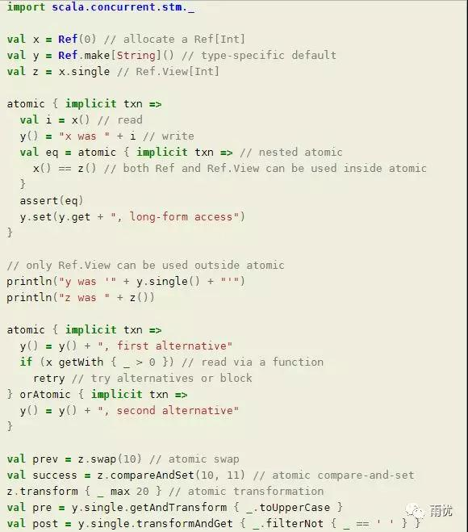